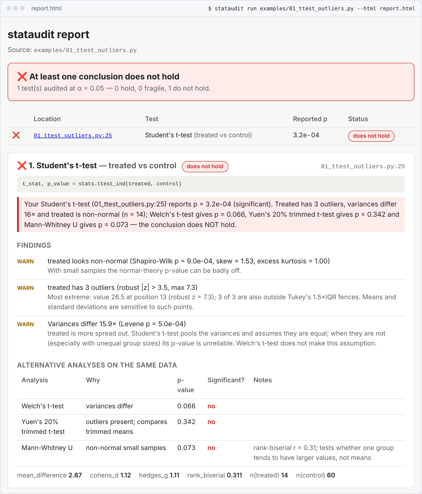

Does the conclusion survive?
stataudit runs your analysis, records every statistical test it performs and checks each one's assumptions on the data it actually received. When a check fails, it runs the alternatives a careful statistician would, and tells you whether the result still holds. An AI assistant's analysis and yours get the same treatment.
Version 1.0.0, MIT licensed. Python, scipy.stats and statsmodels; the fix agent is experimental.
stats.ttest_ind(treated, control)
A report a statistician would recognise
Each test gets one sentence that says what it reported, what is wrong with its input, what the alternatives say and whether the conclusion holds, followed by the evidence: Shapiro-Wilk, robust z-scores, variance ratios, effect sizes. Terminal, HTML, Markdown and JSON.


Real output of stataudit run examples/01_ttest_outliers.py --html report.html, cropped below the result card.
It looks at the data each test received, not the code that called it
ttest_ind(a, b) is fine or not depending on what a and b hold after your filtering. So stataudit runs the analysis and watches. Fixed rules, not a model, decide each verdict.
![stataudit run executes a script or notebook in a subprocess and traces every scipy.stats and statsmodels OLS call. Each call is audited for normality, outliers, unequal variances, leverage, sparse expected counts and the number of p-values. Only when a check fails are alternatives computed on the same data. Fixed rules then give a verdict: holds, fragile or does not hold. stataudit lint and stataudit check-report run without executing anything. Results go to terminal, HTML, Markdown, JSON and PR comment reports.](assets/how-it-works.svg)
Trace
Your script or notebook runs in a subprocess with a timeout. Every scipy.stats test and statsmodels OLS fit is recorded with its arrays, options, result and line.
Audit
Each call's own data is checked: normality, outliers, equal variances, leverage and Cook's distance, expected counts, and how many p-values the script computed.
Alternatives
Only when a check fails: Welch, Yuen and Mann-Whitney; Spearman and refits without influential points; HC3 errors; Fisher or Monte Carlo; Holm.
Verdict
holds fragile does not hold, with the evidence. A clean analysis gets no alternatives at all.
Four analyses that look fine
Each bundled example is the kind of analysis an assistant writes when asked a simple question. The code runs, a p-value comes out, and a conclusion follows. These are stataudit's real verdicts.
-
Is the new onboarding flow different?
01_ttest_outliers.pyThe script saidStudent's t-test, p = 0.0003stataudit found3 outliers, variances 16× apart. Welch 0.066, Mann-Whitney 0.073, Yuen 0.342does not hold -
Does marketing spend predict sign-ups?
02_pearson_leverage.pyThe script saidPearson r = 0.81, p = 1.2e-06stataudit found2 high-leverage regions create it. Without them r = 0.06, p = 0.774; Spearman p = 0.154does not hold -
Does churn reason depend on plan?
03_chisq_sparse.pyThe script saidchi-square on a 3×4 table, p = 0.03stataudit found67 % of expected counts below 5. Monte Carlo test with fixed margins: p = 0.08does not hold -
Which of 15 metrics changed?
04_many_tests.pyThe script said15 Welch t-tests, 3 significantstataudit found54 % chance of a false positive. After Holm, 2 survive; p = 0.02 becomes 0.256fragile
When you can't run the analysis
Private data, a paper draft, a report someone pasted into a pull request. Two commands work without executing anything.
stataudit check-report
Recomputes p from APA-style results in Markdown, text, HTML or PDF, in the spirit of statcheck, and flags inconsistencies, including the gross ones that flip significance.
| Reported | Recomputed | Result |
|---|---|---|
| t(28) = 2.20, p = .04 | 0.036 | consistent |
| z = 2.43, p = .03 | 0.015 | inconsistent |
| F(2, 45) = 3.10, p = .04 | 0.055 | gross |
| r(48) = .21, p = .01 | 0.143 | gross |
stataudit lint
Reads .py and .ipynb as a syntax tree. Fast, needs no data, and each finding comes with a suggested fix.
- Many tests, no correction. Several p-values and no Holm, Bonferroni or FDR step.
- Student's t by default.
ttest_indwithoutequal_var=Falseon unchecked data. - Pearson without a look, chi-square on small tables, and the same arrays put through three or more tests.
An agent that proposes a fix, and a tool that checks it by running it
stataudit fix asks an LLM for a corrected analysis. It is experimental and off by default, uses your own API key, and its patch counts only after stataudit has run it and audited the result.
- Your rows stay home. The model sees the script, the findings and column names, dtypes and n. Raw data only with
--share-data. - Verified, then shown. You get a diff and a before/after verdict table. Nothing is written without
--apply. - Grounded explanations.
stataudit explainrejects any summary containing a number that isn't in the findings.
- Unbenchmarked. We don't publish a success rate because we haven't measured one. Expect it to find nothing when the problem is the study design.
- A verified fix can change the question. Mann-Whitney compares distributions, not means. Read the diff.
Safe to run on pull requests from strangers
On GitHub, stataudit splits the work into jobs that pass artifacts to each other, so no job both runs PR code and holds a secret or a write token. Scripts run only if you list them in stataudit.toml.
- Check job. Runs on
pull_requestwith a read-only token, no secrets andpersist-credentials: false. Lint and check-report never execute anything. - Comment job. Never checks out PR code. It validates
result.json, re-renders the card and escapes all PR text.
- Not a sandbox. A malicious PR can still tamper with its own results inside the unprivileged job.
- Read the full threat model in SECURITY_MODEL.md.
Try it in three steps
The core needs only numpy, scipy, pandas, click and jinja2.
-
Install
pip install stataudit # once 1.0.0 is on PyPI pip install "git+https://github.com/bhaskargurram-ai/stataudit@v1.0.0" -
Audit an analysis
Scripts and notebooks run as they are. Exit code 1 when a conclusion is fragile or doesn't hold.
stataudit run analysis.py --html report.html stataudit run notebook.ipynb stataudit check-report results.md stataudit lint analysis.py -
Add it to pull requests
From your repository root. It writes the caller workflows and a commented
stataudit.toml, and won't overwrite files without--force.stataudit init stataudit init --agent # with the fix agent.github/workflows/stataudit.yml: check the PRname: stataudit on: pull_request: types: [opened, synchronize, reopened] permissions: contents: read concurrency: group: stataudit-${{ github.event.pull_request.number }} cancel-in-progress: true jobs: check: uses: bhaskargurram-ai/stataudit/.github/workflows/check.yml@v1.0.0 with: stataudit-ref: v1.0.0 python-version: "3.12" install-command: 'pip install -r requirements.txt || true' fail-on: never # or "fragile" / "fails" to fail the check.github/workflows/stataudit-comment.yml: post the cardname: stataudit comment on: workflow_run: workflows: ["stataudit"] # must match the `name:` of stataudit.yml types: [completed] permissions: {} jobs: comment: if: github.event.workflow_run.event == 'pull_request' && github.event.workflow_run.conclusion != 'cancelled' permissions: contents: read actions: read # download the artifact of the triggering run pull-requests: write # upsert the comment uses: bhaskargurram-ai/stataudit/.github/workflows/comment.yml@v1.0.0 with: stataudit-ref: v1.0.0stataudit.toml: what CI may runalpha = 0.05 fail-on = "fragile" # fragile | fails | never run = ["analysis/**/*.py"] # executed: opt-in reports = ["reports/**/*.md"] # checked with check-report